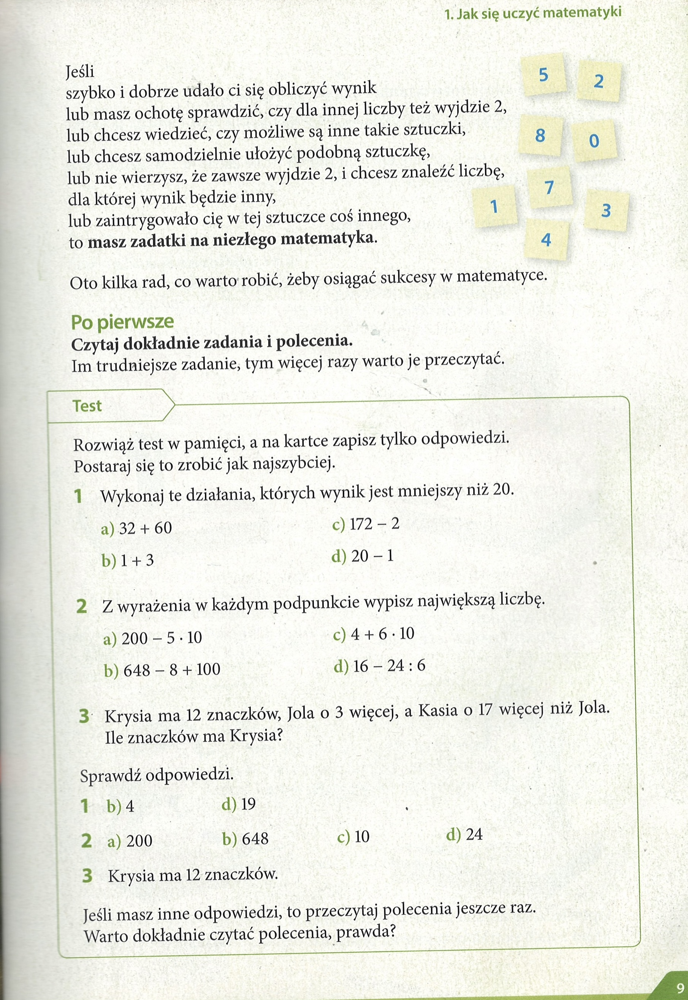
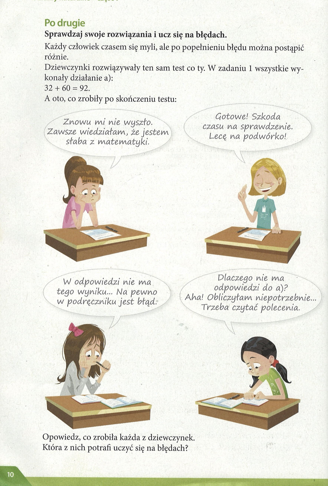
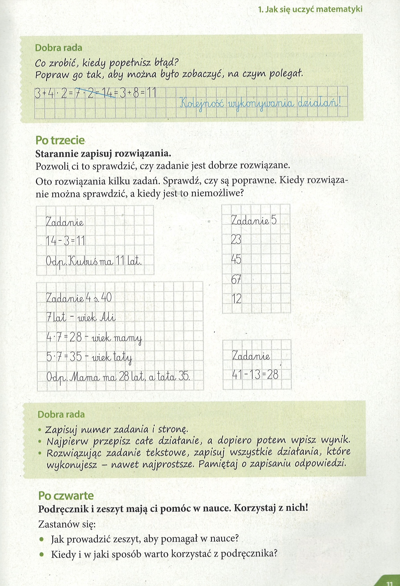
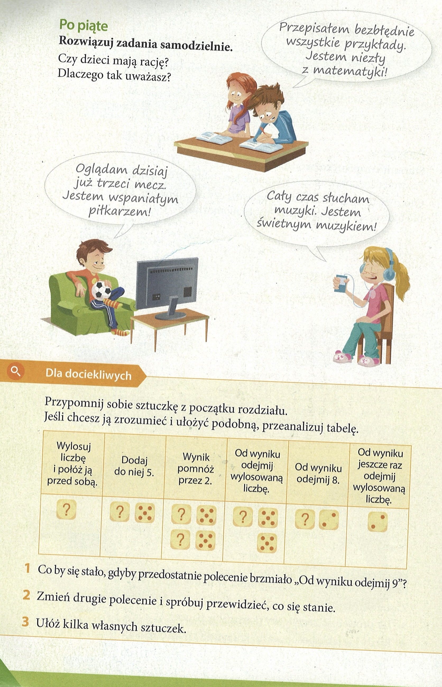

Matematyka
Liczby naturalne - czesc 1
Lekcja 01 - Wprowadzenie — что такое liczby naturalne (натуральные числа).
Liczby naturalne – wyjaśnienie
👉 Co to są liczby naturalne?
- Liczby naturalne to liczby, których używamy do liczenia rzeczy.
- Zaczynają się od zera (0) i dalej mamy: 1, 2, 3, 4, 5, 6, …
👉 Dlaczego się nazywają „naturalne”?
Bo są „naturalne” dla nas – używamy ich na co dzień, kiedy liczymy:
- ile masz lat,
- ile jest jabłek w koszyku,
- który jest dzisiaj dzień miesiąca.
👉 Uwaga!
- Liczby naturalne to 0, 1, 2, 3, 4, 5, …
- Nie mają przecinków ani ułamków (czyli np. 2,5 albo ½ to już nie są liczby naturalne).
- Nie mają też minusa (–3 to nie jest liczba naturalna).
-
Liczby naturalne nie kończą się nigdy.
Możesz zawsze dodać +1 i powstanie nowa, większa liczba.
- Najpierw masz: 0, 1, 2, 3, 4, 5…
- Potem: 10, 11, 12…
- Dalej: 100, 101, 102…
- Dalej: 1000, 1001, 1002…
I tak można liczyć bez końca.
То есть максимального числа нет.
Есть специальное слово для этого: nieskończoność (бесконечность).

Jak się uczyć matematyki
Co warto robić, żeby osiągać sukcesy w matematyce.
Po poerwsze
- Czytaj dokladnie zadania i polecenia.
Im trudniejsze zadanie, tym więcej razy warto je przeczytać.
Zadanie 1. - strona 9
W tym zadaniu musisz wykonać tylko te działania, których wynik jest mniejszy od 20.
1 + 3 = 4
20 – 1 = 19
Zadanie 2. - strona 9
W tym zadaniu musisz z każdego działania wypisać największą liczbę.
a) Największą liczbą z podanych jest 200.
b) Największą liczbą z podanych jest 648.
c) Największą liczbą z podanych jest 10.
d) Największą liczbą z podanych jest 24.
Zadanie 3. - strona 9
W tym zadaniu musisz obliczyć, ile znaczków ma Krysia.
12.
Po drugie
Zapoznaj się z wypowiedzią każdej z dziewczynek, napisz co zrobiła każda z nich i odpowiedz, która z nich umie uczyć się na błędach.
Sprawdzaj swoje rozwiązania i ucz się na błędach.
Każdy człowiek czasem się myli, ale po popełnieniu błędu można postąpić różnie.
A oto, co zrobily po skonczeniu testu:
- Znowu mi nie wyszło. Zawsze wiedziałam, że jestem słaba z matematyki.
- Gotowe! Szkoda czasu na sprawdzenie. Lecę na podwórko!
- W odpowiedzi nie ma tego wyniku... Na pewno w podręczniku jest błąd:
- Dlaczego nie ma odpowiedzi do a)? Aha! Obliczyłam niepotrzebnie... Trzeba czytać polecenia.
Zadanie Po drugie - strona 10
Zapoznaj się z wypowiedzią każdej z dziewczynek, napisz co zrobiła każda z nich i odpowiedz, która z nich umie uczyć się na błędach.
Pierwsza dziewczynka zrobiła błąd w zadaniu i poddała się.
Druga dziewczynka zrobiła zadanie, lecz nie wie, czy dobrze, bo śpieszy się na podwórko.
Trzecia z dziewczynek rozwiązała zadanie niepoprawnie i uważa, że to w podręczniku jest błąd.
Czwarta dziewczynka również zrobiła błąd w zadaniu, ale po sprawdzeniu odpowiedzi znalazła swój błąd.
Ostatnia z dziewczynek jest tą, która umie się uczyć, ponieważ nauka polega na uczeniu się na błędach i zrozumieniu tego, co zrobiło się źle, by na przyszłość nie robić takich błędów.


Po trzeci
- Starannie zapisuj rozwiązania.
Pozwoli ci to sprawdzić, czy zadanie jest dobrze rozwiązane.
Oto rozwiązania kilku zadań. Sprawdź, czy są poprawne. Kiedy rozwiązanie można sprawdzić, a kiedy jest to niemożliwe?
Zadanie - strona 11
Sprawdź, czy rozwiązania są poprawne i odpowiedz na pytanie, kiedy można sprawdzić, czy zadanie jest poprawnie rozwiązane, a kiedy nie.
Nie znamy poleceń do zadań, więc jesteśmy w stanie tylko sprawdzić poprawność wykonywanych obliczeń, ale nie wiedząc, jakie były polecenia, nie będziemy w stanie sprawdzić poprawności wszystkich przykładów.
W pierwszym z przykładów działanie 14 – 3 = 11 jest poprawne, ale nie znamy polecenia.
W zadaniu oznaczonym jako zadanie 4 s. 40, wyniki są poprawnie policzone.
W zadaniu 5 mamy tylko podane liczby, ale nie wiemy, jakie było polecenie, więc nie jesteśmy w stanie powiedzieć, czy jest to poprawnie obliczone.
W ostatnim zadaniu działanie 41 – 13 = 28 jest poprawnie policzone.
Dobra rada
- Zapisuj numer zadania i stronę.
- Najpierw przepisz całe działanie, a dopiero potem wpisz wynik.
- Rozwiazując zadanie tekstowe, zapisuj wszystkie działania, które wykonujesz - nawet najprostsze. Pamiętaj o zapisaniu odpowiedzi.
Zadanie Po czwarte, a) - strona 11
Zastanów się, jakie sposoby prowadzenia zeszytu pomogą ci najlepiej w nauce.
Aby zeszyt pomagał jak najlepiej, należy prowadzić go starannie, przepisywać uważnie z tablicy, oznaczać, z której strony jest dane zadanie, można też używać kolorów, żeby najważniejsze rzeczy były łatwo widoczne, co pozwoli je szybciej zapamiętać.
Zadanie Po czwarte, b) - strona 11
Zastanów się, w jakich przypadkach i kiedy warto będzie skorzystać z podręcznika.
Z podręcznika warto korzystać podczas lekcji, żeby być na bieżąco, warto z niego również korzystać, rozwiązując zadania domowe zadane przez nauczyciela i ucząc się do sprawdzianu lub kartkówki.
Po piąte
Rozwiazuj zadania samodzielnie.
Czy dzieci mają rację?
Dlaczego tak uważasz?
- Przepisałem bezbtednie wszystkie przykłady. Jestem niezły z matematyki!
- Oglądam dzisiaj już trzeci mecz. Jestem wspaniałym piłkarzem!
- Cały czas słucham swietnym muzykiem!
Dla dociekliwych
Przypomnij sobie sztuczkę z początku rozdziału.
Jesli chcesz ją zrozumieć i ułożyć podobną, przeanalizuj tabelę.
Zadanie 1 - strona 12
Odpowiedz na pytanie, co zmieniłoby odjęcie w przedostatnim kroku liczby 9 zamiast 8?
Zamiast wyniku 2 dostalibyśmy 1.
Zadanie 2 - strona 12
Musisz zmienić drugie polecenie i spróbować powiedzieć, jak to zmieni wynik.
Zmieńmy drugie polecenie na „Dodaj do niej 6” i zobaczmy, co się stanie.
Wynikiem wtedy będzie 4.
Zadanie 3 - strona 12
Musisz wymyślić sztuczki takie jak w podanej tabelce wyżej.
Sztuczka nr 1.
Wylosuj liczbę, następnie pomnóż ją przez 3 i dodaj 4, a potem pomnóż przez 2, a na końcu odejmij liczbę sześć razy większą od tej, którą wylosowałeś na początku. Wynikiem zawsze będzie 8.
Sztuczka nr 2.
Wylosuj liczbę, następnie dodaj do niej 10 i pomnóż przez 4, odejmij 30, a potem odejmij liczbę trzy razy większą od liczby, którą wylosowałeś. Wynikiem będzie liczba większa o 10 od liczby, którą wylosowałeś.
